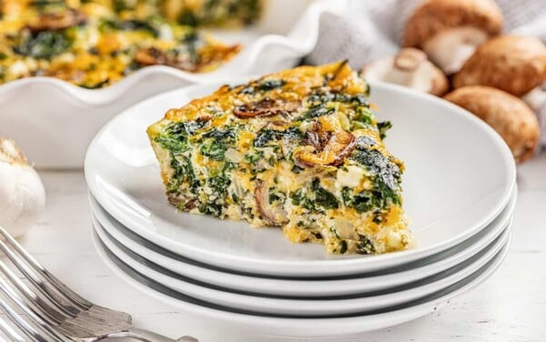

Crustless Spinach Quiche

Description
We absolutely love quiches.
A good quiche can be served up for breakfast, brunch, lunch, dinner, or just a good midnight snack.
They are a complete meal with plenty of protein, fat, and veggies, so you will feel good about serving it up to your family.
Don’t worry, all they’re going to notice is that they love it, so that whole ‘healthy’ thing can be our little secret.
It is savory and cheesy and delicious, and so easy to make!
Ingredients
- 1 tablespoon extra virgin olive oil
- 1 small sweet onion, diced
- 4 ounces mushrooms, sliced
- 2 cloves minced garlic
- 10 ounches chopped frozen spinach, thawed and drained
- 6 ounces crumbled feta cheese
- 8 ounces shredded cheddar cheese
- 5 large eggs
- 1/2 cup milk
- 1/4 teaspoon table salt
- 1/4 teaspoon black pepper
Steps
- Preheat oven to 350 degrees Fahrenheit and lightly grease a 9-inch deep dish pie plate.
- Heat olive oil in a large skillet over medium high heat.
Add in onion and mushroom and saute until softened, about 5 to 7 minutes.
Add in garlic and cook 1 minute more.
Turn off heat and stir in spinach, feta, and cheddar cheese.
Spoon mixture into the prepared pie plate.
- In a mixing bowl, whisk together eggs, milk, salt, and pepper.
Pour egg mixture over the spinach mixture in the prepared pie plate.